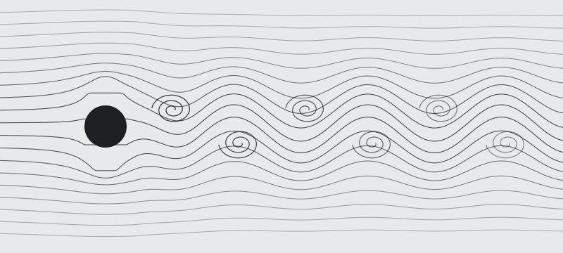

The new desktop direction. The article stands alone with wide, empty margins. Chapters become a column of ticks at the left edge that opens into the full list and highlights a map of the whole article at the right edge; both rest at 40% and come forward when the pointer nears them. The full list is one click away in the header. This supersedes the three-column frames on the Desktop page. Frames are live: move the pointer to either edge, hover, click, tab through.
a · At rest, mid-article
Nothing but the text. The current chapter's tick is longer and ink at rest, so “you are here” reads even at 40%. On the right, each tick sits where its highlight sits in the article, and the faint ink bar is the part on screen now.
b · The chapter list
Point at the tick column (or tab into it) and, after a 100ms hover intent, the whole column opens into the full chapter list. Each tick shrinks to a leading dash and its label slides in on the same row, staggered 16ms per row and capped at 160ms. Sub-chapters are indented, the current chapter carries the marker band, and the row under the pointer gets a wash. It opens with expo-out at 250ms and closes faster (150ms ease-in) 200ms after the pointer leaves. The card fits the left margin (up to 272px) and never covers the text column; a long list scrolls inside it. Keyboard: ↑ ↓ Home End move between rows, Enter jumps, Esc collapses.
c · Pointing at a highlight
A small card opens toward the article: the passage, its note, its color. Ticks with a note carry a dot. Click jumps there and the band redraws once (the existing flash).
d · The full list
The Highlights button opens a panel from the right (450ms expo-out) with the same list as the phone sheet, including the one that no longer matches the text. The article slides left so it stays fully readable, and the edge rails step back while the panel is open. Esc, the button or Close shuts it.
e · A new highlight lands
After a swatch is picked in the popover (as on the Desktop page), the band draws across the passage left to right, and a beat later its tick draws in on the map with the same marker swipe (600ms expo-out). Under reduced motion both simply appear.
Touch and tablets
Coarse pointer (a landscape tablet at ≥1024px gets this layout): there's no hover, so both edges sit at full opacity. Chapters: the first tap on the tick column opens the chapter list, a tap on a row jumps, and a tap outside folds it back. Highlights: the first tap on a map tick shows its card, a second tap on the same tick jumps, and a tap elsewhere dismisses. Chapter rows are 44px tall; map ticks are 48 × 44px. Where map ticks are closer than 44px apart, the first tap picks the nearest one, so a crowded map never jumps to the wrong place.
Under 1024px the phone reader (approved) takes over: Chapters, Highlights and More in the bottom bar.
The Navier–Stokes equations are partial differential equations which describe the motion of viscous fluid substances. They were named after the French engineer and physicist Claude-Louis Navier and the Irish physicist and mathematician George Gabriel Stokes, and were developed over several decades of progressively building the theories, from 1822 (Navier) to 1842–1850 (Stokes).
The equations express the balance of momentum for Newtonian fluids and make use of the conservation of mass. They are sometimes accompanied by an equation of state relating pressure, temperature and density.1 They arise from applying Isaac Newton's second law to fluid motion, together with the assumption that the stress in the fluid is the sum of a diffusing viscous term, proportional to the gradient of velocity, and a pressure term — hence describing viscous flow.
The equations are useful because they describe the physics of many phenomena of scientific and engineering interest. They may be used to model the weather, ocean currents, water flow in a pipe and air flow around a wing. In their full and simplified forms they help with the design of aircraft and cars, the study of blood flow, the design of power stations and the analysis of pollution.
In 2000 the Clay Mathematics Institute named the existence and smoothness of solutions in three dimensions one of its seven Millennium Prize problems, with a prize of US$1 million for a proof or a counterexample.2
Flow velocity
The solution of the equations is a flow velocity. It is a vector field: to every point in a fluid, at any moment in a time interval, it gives a vector whose direction and magnitude are those of the velocity of the fluid at that point in space and at that moment in time. It is usually studied in three spatial dimensions and one time dimension, although two-dimensional and steady-state cases are often used as models.
Once the velocity field is calculated, other quantities of interest such as pressure or temperature may be found using dynamical equations and relations. This is different from what one normally sees in classical mechanics, where solutions are typically trajectories of position of a particle or deflection of a continuum. Studying velocity instead of position makes more sense for a fluid, although for visualisation one can compute streamlines and pathlines.
General continuum equations
The Navier–Stokes momentum equation can be derived as a particular form of the Cauchy momentum equation, whose general convective form is , where is the material derivative and the Cauchy stress tensor.
Assumptions
The derivation rests on a short list of assumptions about the fluid:
The fluid is a continuum: it is not made up of discrete particles but is a continuous substance.
All the fields of interest are differentiable throughout the fluid:
pressure and density ;
temperature ;
the flow velocity itself.
Stress is linear in the strain rate. A fluid that behaves this way is called Newtonian.
The fluid is isotropic, so its response does not depend on direction.
Convective acceleration
A significant feature of the Cauchy equation, and consequently all other continuum equations, is the presence of convective acceleration: the effect of time-independent acceleration of a flow with respect to space. While individual fluid particles indeed experience time-dependent acceleration, the convective acceleration of the flow field is a spatial effect, one example being fluid speeding up in a nozzle.
A note on notation
The convective term is sometimes written . The two are equal for any smooth field, but the bracketed form makes the order of operations explicit.
Incompressible flow
The incompressible momentum equation follows from three assumptions on the Cauchy stress tensor: the stress is Galilean invariant, it depends linearly on the velocity gradient, and the fluid is isotropic. For a fluid of constant density and dynamic viscosity it takes the form
where is the flow velocity, the pressure and the body force per unit volume, such as gravity. It is paired with the continuity equation , which says that whatever flows into a small volume must flow out of it.

Flow past a circular cylinder at a Reynolds number of about 100. Vortices shed alternately from the top and bottom of the cylinder, forming a von Kármán vortex street.
Each term carries a physical meaning. The left side is mass times acceleration per unit volume: the unsteady term and the convective term. On the right, the pressure gradient pushes fluid from high to low pressure, viscosity diffuses momentum, and the body force accounts for everything acting at a distance.
Properties
Nonlinearity
The Navier–Stokes equations are nonlinear partial differential equations in the general case, and so remain in almost every real situation. In some cases, such as one-dimensional flow and Stokes flow (or creeping flow), the equations can be simplified to linear equations. The nonlinearity makes most problems difficult or impossible to solve and is the main contributor to the turbulence that the equations model.
The nonlinearity is due to convective acceleration, which is an acceleration associated with the change in velocity over position. Hence, any convective flow, whether turbulent or not, will involve nonlinearity.
Turbulence
Turbulence is the time-dependent chaotic behaviour seen in many fluid flows. It is generally believed to be due to the inertia of the fluid as a whole: the culmination of time-dependent and convective acceleration. Flows where inertial effects are small therefore tend to be laminar. Whether a flow is laminar or turbulent is predicted by the Reynolds number, , the ratio of inertial to viscous forces.
It is believed, though not known with certainty, that the Navier–Stokes equations describe turbulence properly.3 The numerical solution of the equations for turbulent flow is extremely difficult, and due to the significantly different mixing-length scales involved, a stable solution requires such a fine mesh resolution that the computational time becomes infeasible for calculation, an approach called direct numerical simulation.
Number
Definition
Ratio of
Water in a pipe
Air over a wing
Named after
Reynolds,
inertia to viscosity
2 × 104
6 × 106
Osborne Reynolds
Mach,
flow speed to sound speed
0.001
0.78
Ernst Mach
Froude,
inertia to gravity
0.3
—
William Froude
Prandtl,
momentum to heat diffusion
7.0
0.71
Ludwig Prandtl
Applicability
Together with supplemental equations such as conservation of mass, and well-formulated boundary conditions, the Navier–Stokes equations seem to model fluid motion accurately; even turbulent flows seem, on average, to agree with real-world observations. They assume the fluid is a continuum, which breaks down for very rarefied gases, where the mean free path of the molecules approaches the length scale of the problem.
Numerical methods
Most practical problems are solved numerically. A common teaching example is the projection method: advance the velocity without the pressure term, then solve a Poisson equation for the pressure that makes the field divergence-free. In the sketch below, nu is the kinematic viscosity and dt the time step.
def step(u, v, p, dt, dx, nu, rho, nit=50):
un, vn = u.copy(), v.copy()
# 1. advance the velocity without pressure (explicit Euler, central differences)
u[1:-1, 1:-1] = un[1:-1, 1:-1] - dt * (un[1:-1, 1:-1] * ddx(un, dx) + vn[1:-1, 1:-1] * ddy(un, dx)) + nu * dt * lap(un, dx)
v[1:-1, 1:-1] = vn[1:-1, 1:-1] - dt * (un[1:-1, 1:-1] * ddx(vn, dx) + vn[1:-1, 1:-1] * ddy(vn, dx)) + nu * dt * lap(vn, dx)
# 2. solve the pressure Poisson equation so the next field is divergence-free
p = pressure_poisson(p, rho / dt * div(u, v, dx), dx, nit)
# 3. project: subtract the pressure gradient
u[1:-1, 1:-1] -= dt / rho * ddx(p, dx)
v[1:-1, 1:-1] -= dt / rho * ddy(p, dx)
return u, v, p
Stability limits the time step. For an explicit scheme the Courant number must stay below one, and the viscous term adds a restriction of its own.
Existence and smoothness
Mathematicians have not yet proved whether smooth solutions always exist in three dimensions, that is, whether they are infinitely differentiable, or even just bounded, at all points in the domain. The Clay Mathematics Institute states the problem as follows:
Prove or give a counter-example of the following statement: in three space dimensions and time, given an initial velocity field, there exists a vector velocity and a scalar pressure field, which are both smooth and globally defined, that solve the Navier–Stokes equations.
In two dimensions, smooth solutions are known to exist for all time. The three-dimensional case remains open, and is one of the reasons the equations are still studied so intensely.
Notes
An equation of state is needed only for compressible flow. For incompressible flow the density is constant. ↩
Clay Mathematics Institute, Millennium Prize Problems, 2000. ↩
Turbulence models, such as the Reynolds-averaged equations, trade this certainty for tractability. ↩